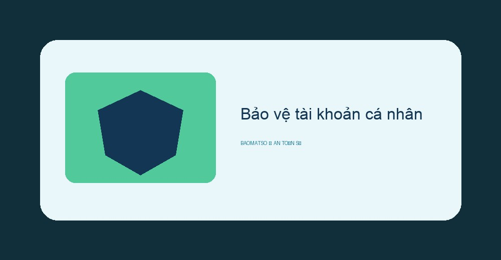

Nhận Diện Lừa Đảo Trên Internet: Dấu Hiệu Và Cách Phòng Tránh
Lừa đảo trực tuyến xuất hiện dưới nhiều hình thức, từ website giả mạo đến tin nhắn yêu cầu xác minh tài khoản. Nếu không kiểm tra nguồn gửi, người dùng có thể bị dẫn đến trang đăng nhập giả hoặc cung cấp thông tin cho đối tượng lừa đảo.
Bài viết này giúp bạn nhận diện các dấu hiệu thường gặp, kiểm tra liên kết đáng ngờ và biết cách xử lý khi có rủi ro. Bạn có thể tham khảo thêm các nội dung về an toàn thông tin tại Baomatso.
Lừa đảo trên Internet là gì và vì sao khó nhận biết?
Lừa đảo trên Internet là hành vi sử dụng website, tin nhắn, email hoặc các hình thức trực tuyến khác để đánh lừa người dùng, nhằm lấy thông tin cá nhân, chiếm quyền truy cập tài khoản hoặc chiếm đoạt tài sản.
Lừa đảo trực tuyến thường bắt đầu như thế nào?
Một tình huống phổ biến là người dùng nhận được thông báo về tài khoản, giao dịch hoặc đơn hàng. Nội dung thường yêu cầu xác minh thông tin qua một đường dẫn được gửi kèm.
Sau khi truy cập, người dùng có thể gặp trang đăng nhập giả hoặc biểu mẫu yêu cầu nhập dữ liệu cá nhân.
Vì sao người dùng dễ tin vào thông tin giả mạo?
Một số đối tượng sử dụng tên thương hiệu, logo và giao diện gần giống dịch vụ quen thuộc. Họ cũng có thể tạo cảm giác khẩn cấp bằng cách thông báo tài khoản gặp sự cố hoặc giao dịch cần xử lý ngay.
Khi bị thúc giục, người dùng dễ làm theo hướng dẫn mà chưa kịp xác minh nguồn gửi.
Những hình thức lừa đảo phổ biến trên Internet
Website giả mạo thương hiệu hoặc dịch vụ quen thuộc
Website giả mạo thường sử dụng tên miền gần giống trang thật, sao chép logo hoặc thiết kế giao diện để tạo cảm giác đáng tin cậy. Một số trang còn quảng cáo dịch vụ hỗ trợ lấy lại tiền đã mất hoặc yêu cầu người dùng đăng nhập để xác minh tài khoản.
Theo thông tin được Công an tỉnh Sơn La đăng tải, trong tuần từ ngày 18 đến 24/3/2024, hệ thống cảnh báo của NCSC ghi nhận 320 phản ánh về các trường hợp lừa đảo trên không gian mạng. Một trường hợp được đề cập là website policeonline.club giả mạo NCSC, quảng cáo dịch vụ hỗ trợ lấy lại tiền với tỷ lệ thành công lên tới 99,9%. Đây là con số do website giả mạo đưa ra, không phải kết quả được cơ quan chức năng xác nhận. Xem thông tin từ Công an tỉnh Sơn La.
Tin nhắn và email giả mạo
Email hoặc tin nhắn lừa đảo có thể giả danh ngân hàng, đơn vị giao hàng hay bộ phận hỗ trợ. Nội dung thường đề cập đến tài khoản bị khóa, giao dịch bất thường hoặc yêu cầu cập nhật thông tin.
Không nên đánh giá độ tin cậy chỉ qua cách trình bày. Một tin nhắn được viết chuyên nghiệp vẫn có thể chứa liên kết giả mạo.
Lừa đảo thông qua liên kết đăng nhập và mã xác minh
Một số trang giả mạo yêu cầu nhập mật khẩu, mã OTP hoặc thông tin thanh toán. Nếu cung cấp những dữ liệu này, người dùng có nguy cơ mất quyền kiểm soát tài khoản.
Bạn có thể đọc thêm bài vì sao không nên chia sẻ mã xác minh để hiểu rõ hơn về rủi ro của OTP.
Những dấu hiệu cảnh báo giúp nhận diện lừa đảo
Người gửi hoặc nguồn thông tin không rõ ràng
Hãy kiểm tra địa chỉ email, số điện thoại và tên miền gửi thông báo. Tên hiển thị có thể giống tổ chức quen thuộc nhưng địa chỉ thực tế lại khác.
Nội dung thúc giục hành động ngay
Thông báo yêu cầu xử lý gấp, đe dọa khóa tài khoản hoặc gây áp lực về thời gian là dấu hiệu cần thận trọng. Đừng vì lo lắng mà vội truy cập liên kết hoặc cung cấp thông tin.
Yêu cầu cung cấp thông tin nhạy cảm
Mật khẩu, OTP và dữ liệu thanh toán cần được bảo vệ. Không chia sẻ những thông tin này với người liên hệ qua tin nhắn hoặc cuộc gọi tự xưng là nhân viên hỗ trợ. Nếu cần xác minh, hãy chủ động liên hệ đơn vị liên quan qua website hoặc ứng dụng chính thức.
Liên kết và nội dung có điểm bất thường
Tên miền sai khác một vài ký tự, đường dẫn rút gọn không rõ nguồn hoặc nội dung không khớp với dịch vụ được nhắc đến đều cần kiểm tra kỹ. Lỗi chính tả cũng có thể là dấu hiệu cảnh báo, dù không phải website lừa đảo nào cũng mắc lỗi.
Theo tài liệu của CISA, các dấu hiệu thường gặp trong email phishing gồm người gửi không phù hợp, yêu cầu hành động khẩn cấp và đề nghị cung cấp thông tin cá nhân hoặc tài chính. Đây là những dấu hiệu cần kiểm tra thêm, không phải bằng chứng chắc chắn rằng hành vi lừa đảo đã xảy ra. Tham khảo tài liệu nhận diện phishing của CISA.
Một thông báo có vẻ khẩn cấp không có nghĩa là bạn phải hành động ngay. Hãy kiểm tra người gửi, nội dung và nguồn liên kết trước khi cung cấp thông tin.
Cách kiểm tra website và liên kết đáng ngờ
Kiểm tra kỹ tên miền và địa chỉ website
Đừng chỉ nhìn tên thương hiệu hoặc logo. Hãy đọc toàn bộ tên miền, chú ý ký tự bị thay thế, dấu gạch nối và phần mở rộng.
Ví dụ minh họa: portal.example.com và portal-example.com là hai tên miền khác nhau. Một khác biệt nhỏ vẫn có thể dẫn đến website không liên quan.
Bạn có thể tham khảo thêm bài cách nhận biết website giả mạo.
Xác minh nguồn gửi liên kết
Nếu nhận được đường dẫn qua email hoặc tin nhắn, hãy kiểm tra bằng cách tự truy cập website hoặc ứng dụng chính thức. Khi cần liên hệ hỗ trợ, nên sử dụng thông tin được công bố trên kênh đáng tin cậy thay vì số điện thoại trong tin nhắn đáng ngờ.
Đánh giá các yếu tố trên website
Thông tin liên hệ, chính sách bảo mật và nội dung dịch vụ có thể giúp bạn đánh giá website. Tuy nhiên, những yếu tố này chưa đủ để chứng minh một trang web là hợp pháp.
HTTPS giúp mã hóa dữ liệu trao đổi giữa trình duyệt và máy chủ, nhưng không xác nhận website thuộc về tổ chức mà bạn đang tìm kiếm.
Giao diện chuyên nghiệp hoặc biểu tượng ổ khóa không đồng nghĩa với việc website an toàn. Hãy kiểm tra tên miền và nguồn truy cập trước khi đăng nhập.

Cần làm gì khi phát hiện dấu hiệu lừa đảo?
Dừng tương tác với nguồn đáng ngờ
Không tiếp tục nhập thông tin, tải tệp hoặc làm theo hướng dẫn khi chưa xác minh được nguồn gửi. Nếu nghi ngờ một cuộc gọi hay tin nhắn, hãy dừng trao đổi và kiểm tra độc lập.
Xác minh thông tin qua kênh chính thức
Nếu nhận được thông báo về tài khoản hoặc giao dịch, hãy tự mở ứng dụng hoặc website chính thức để kiểm tra. Bạn cũng có thể gọi số điện thoại được công bố trên website chính thức hoặc mặt sau thẻ ngân hàng.
Xử lý khi đã nhấp vào liên kết hoặc cung cấp thông tin
Nếu chỉ mở liên kết nhưng chưa nhập dữ liệu, tải tệp hay cấp quyền, hãy đóng trang và không tiếp tục tương tác. Kiểm tra thư mục tải xuống; không mở hoặc chạy tệp lạ.
Nếu đã cài ứng dụng đáng ngờ hoặc cấp quyền bất thường, hãy ngừng sử dụng, thu hồi các quyền không cần thiết và gỡ ứng dụng. Trường hợp đã nhập thông tin tài khoản trên thiết bị đó, nên đổi mật khẩu bằng một thiết bị đáng tin cậy.
Nếu đã nhập mật khẩu, hãy đổi mật khẩu qua kênh chính thức và kiểm tra các phiên đăng nhập. Nếu đã chia sẻ OTP, hãy kiểm tra lịch sử đăng nhập, giao dịch và thay đổi tài khoản; đăng xuất thiết bị lạ nếu có thể, sau đó liên hệ đơn vị cung cấp dịch vụ qua website hoặc ứng dụng chính thức.
Trường hợp đã cung cấp thông tin thẻ, hãy liên hệ ngân hàng qua kênh chính thức để được hướng dẫn biện pháp bảo vệ phù hợp.
Xử lý sớm giúp hạn chế rủi ro. Hãy ưu tiên bảo vệ tài khoản và liên hệ đúng đơn vị liên quan thay vì tiếp tục làm theo hướng dẫn từ nguồn đáng ngờ.
Thói quen giúp bảo vệ thông tin cá nhân trước lừa đảo
Sử dụng mật khẩu riêng và xác thực nhiều lớp
Không nên dùng chung một mật khẩu cho nhiều tài khoản. Khi dịch vụ hỗ trợ xác thực nhiều lớp, hãy bật tính năng này để tăng thêm lớp bảo vệ.
Hạn chế chia sẻ thông tin cá nhân
Chỉ cung cấp dữ liệu cần thiết cho dịch vụ đã xác minh. Bạn có thể tham khảo thêm các nguyên tắc bảo vệ thông tin cá nhân để hình thành thói quen sử dụng Internet thận trọng hơn.
Kiểm tra hoạt động tài khoản định kỳ
Chú ý thông báo đăng nhập, thiết bị lạ và những thay đổi không do bạn thực hiện. Nếu phát hiện hoạt động bất thường, hãy kiểm tra tài khoản qua kênh chính thức.
Câu hỏi thường gặp về nhận diện lừa đảo
Làm sao nhận biết một website có dấu hiệu lừa đảo?
Hãy kiểm tra tên miền, nguồn gửi liên kết và thông tin website. Không nên dựa vào logo, giao diện hoặc HTTPS để kết luận một trang là đáng tin cậy.
Website có HTTPS có chắc chắn an toàn không?
Không. HTTPS bảo vệ dữ liệu trên đường truyền nhưng không xác minh chủ sở hữu website hoặc mục đích hoạt động của trang.
Có nên đăng nhập qua liên kết trong tin nhắn không?
Không nên đăng nhập trực tiếp khi chưa xác minh nguồn gửi. Hãy tự truy cập ứng dụng hoặc website chính thức để kiểm tra.
Vì sao không nên chia sẻ mã OTP?
OTP có thể được dùng để xác minh đăng nhập hoặc giao dịch. Chia sẻ mã này có thể tạo điều kiện cho người khác thực hiện hành động trên tài khoản của bạn.
Đã nhấp vào liên kết đáng ngờ thì phải làm gì?
Nếu chưa nhập thông tin, tải tệp hoặc cấp quyền, hãy đóng trang và dừng tương tác. Nếu đã cung cấp dữ liệu, cần xử lý theo loại thông tin đã lộ và liên hệ đơn vị liên quan.
Làm thế nào để giảm nguy cơ gặp lừa đảo trực tuyến?
Hãy kiểm tra nguồn thông tin, đọc kỹ tên miền, sử dụng mật khẩu riêng và hạn chế chia sẻ dữ liệu cá nhân. Khi gặp yêu cầu bất thường, nên xác minh trước khi hành động.
Kết luận
Nhận diện lừa đảo trên Internet bắt đầu từ việc kiểm tra người gửi, tên miền và nội dung yêu cầu. Khi phát hiện dấu hiệu bất thường, hãy dừng tương tác và xác minh qua kênh chính thức. Duy trì những thói quen này giúp bạn chủ động bảo vệ tài khoản và thông tin cá nhân khi sử dụng Internet.